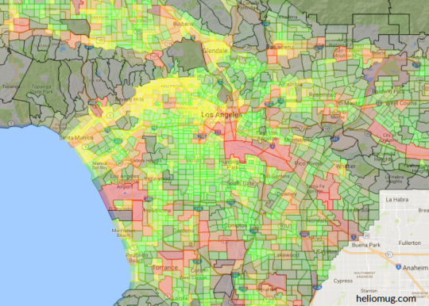

My Data Visualizations
Here are a couple of data visualizations I've made.
LA County Commute Origin-Destination Density
This is a Google Map I made based on some census data about commutes.
LA County Commute Origin-Destination Density

There are a couple of visualizations here that show the densities of metropolitan areas of the United States as you move from city center.